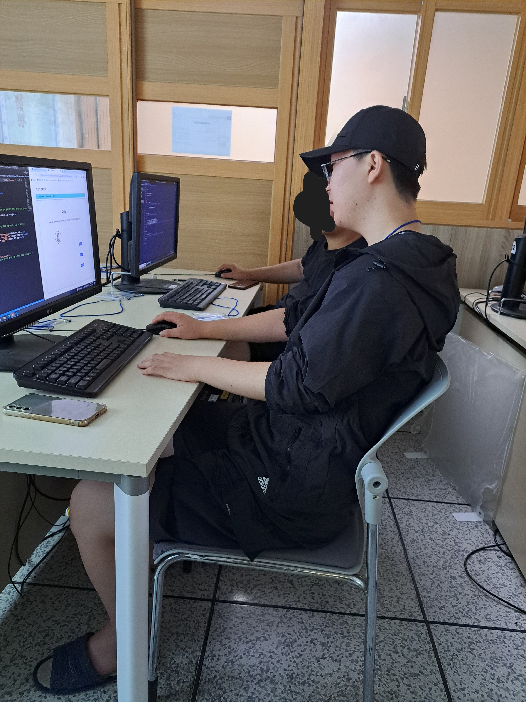

제 오른쪽의 안경과 모자를 쓴 사람은 조주영입니다. 원래 국어 학원을 같이 다녔으나 이 친구의 성적이 나락으로 가서 더 이상 볼 수 없게 되었습니다.참으로 가엽고 딱하고 안타깝고 불쌍하고 연민을 느끼고 동정을 해야 하는 일이 아닐 수 없지 않습니다.조주영은 도발을 잘합니다. 그래서 이제 곧 있으면 에어팟 뚜껑이 떨어저 나갈 운명입니다.참으로 가엽고 딱하고 안타깝고 불쌍하고 연민을 느끼고 동정을 해야 하는 일이 아닐 수 없지 않습니다. 아래 사진은 수학 3등급 맞았다고 좋아하는 조주영의 사진입니다.
 `조주영은 춘식이 이모티콘을 자주 사용합니다. 어째서인지는 몰라도 아주 열받게 잘 사용합니다.